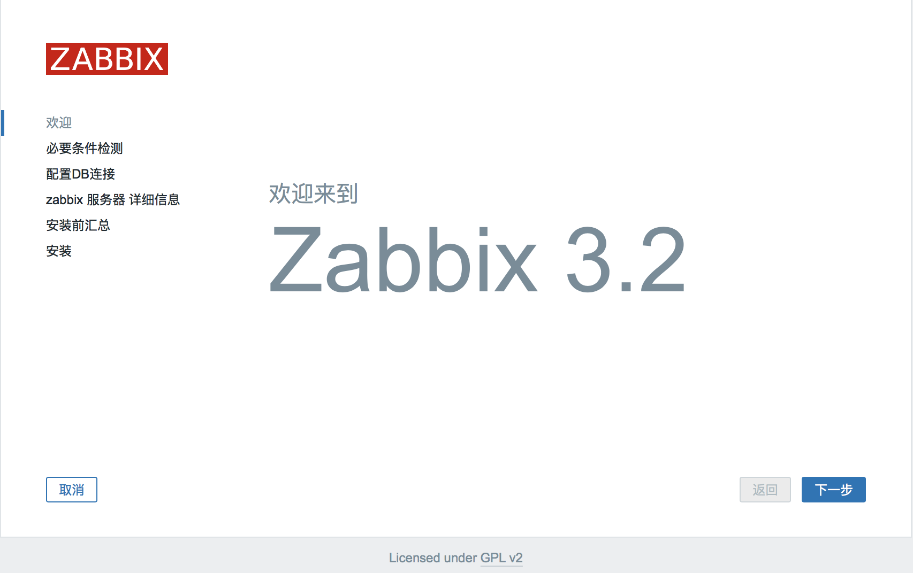
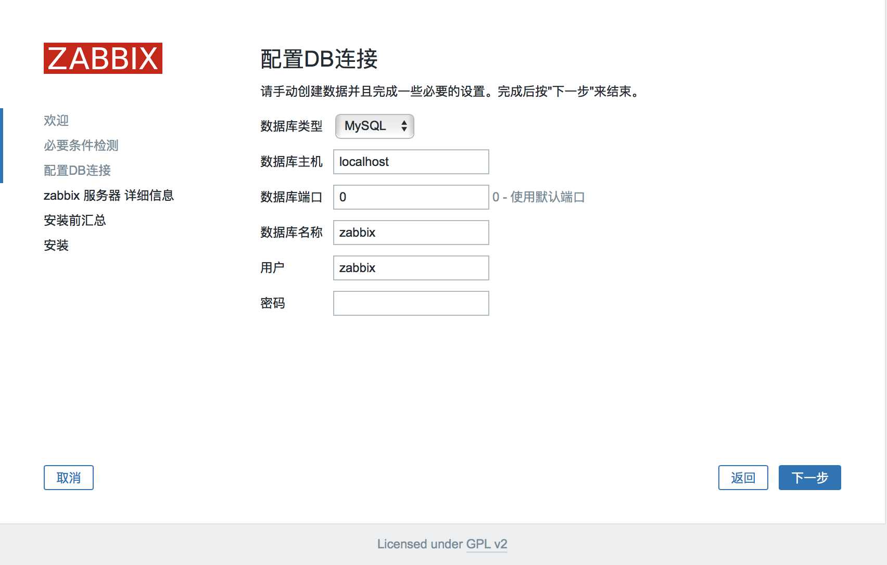
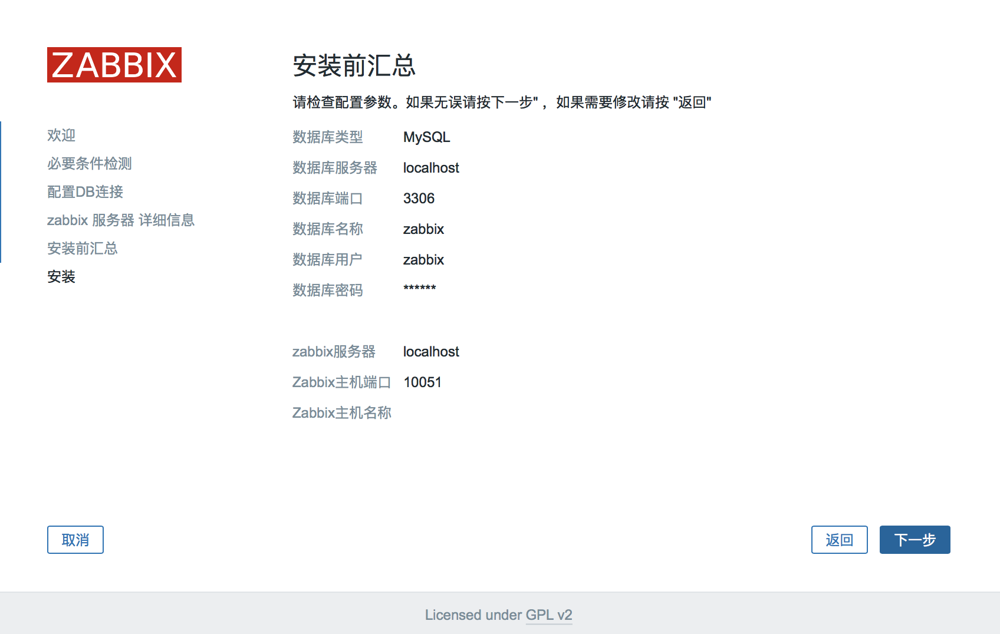

Linux: CentOS Linux release 7.3.1611 (Core)
zabbix: 3.2.6
nginx: 1.12.0
php: 5.5.14
mysql: 5.6.19
软件源代码包存放位置：/usr/local/src
源码包编译安装位置：/usr/local/软件名字
# yum install -y apr* autoconf automake bison bzip2 bzip2* cloog-ppl compat* cpp curl curl-devel fontconfig fontconfig-devel freetype freetype* freetype-devel gcc gcc-c++ gtk+-devel gd gettext gettext-devel glibc kernel kernel-headers keyutils keyutils-libs-devel krb5-devel libcom_err-devel libpng libpng-devel libjpeg* libsepol-devel libselinux-devel libstdc++-devel libtool* libgomp libxml2 libxml2-devel libXpm* libxml* libtiff libtiff* make mpfr ncurses* ntp openssl openssl-devel patch pcre-devel perl php-common php-gd policycoreutils telnet t1lib t1lib* nasm nasm* wget zlib-devel vim
# cd /usr/local/src
# wget http://www.cmake.org/files/v2.8/cmake-2.8.11.2.tar.gz
# tar zxvf cmake-2.8.11.2.tar.gz
# cd cmake-2.8.11.2
# ./configure
# make
# make install
添加mysql组
# groupadd mysql
创建用户mysql并加入到mysql组，不允许mysql用户直接登录系统
# useradd -g mysql mysql -s /bin/false
创建MySQL数据库存放目录
# mkdir -p /data/mysql
设置MySQL数据库存放目录权限
# chown -R mysql:mysql /data/mysql
创建MySQL安装目录
# mkdir -p /usr/local/mysql
# cd /usr/local/src
# tar zxvf mysql-5.6.19.tar.gz
# cd mysql-5.6.19
配置
# cmake . -DCMAKE_INSTALL_PREFIX=/usr/local/mysql -DMYSQL_DATADIR=/data/mysql -DSYSCONFDIR=/etc
# make
# make install
删除系统默认的配置文件（如果默认没有就不用删除）
# rm -f /etc/my.cnf
# ln -s /usr/local/mysql/my.cnf /etc/my.cnf
添加开机自启动
# cp ./support-files/mysql.server /etc/rc.d/init.d/mysqld
# chmod 755 /etc/init.d/mysqld
# chkconfig mysqld on
编辑如下文件并保存退出
# vim /etc/rc.d/init.d/mysqld
basedir=/usr/local/mysql #MySQL程序安装路径
datadir=/data/mysql #MySQl数据库存放目录
编辑profile文件，在最后一行追加
# vim /etc/profile
export PATH=$PATH:/usr/local/mysql/bin
# source /etc/profile
# ln -s /usr/local/mysql/lib/mysql /usr/lib/mysql
# ln -s /usr/local/mysql/include/mysql /usr/include/mysql
# mkdir -p /var/lib/mysq
# ln -s /tmp/mysql.sock /var/lib/mysql/mysql.sock
设置root密码
#mysql -u root
> grant all privileges on *.* to 'root'@'localhost' identified by '123456';
> grant all privileges on *.* to 'root'@'192.168.10.171' identified by '123456';
# wget
# mkdir /usr/local/pcre
# tar zxvf pcre-8.35.tar.gz
# cd pcre-8.35
# ./configure --prefix=/usr/local/pcre
# make
# make install
# wget
# mkdir /usr/local/openssl
# tar zxvf openssl-1.0.1h.tar.gz
# cd openssl-1.0.1h
# ./config --prefix=/usr/local/openssl
# make
# make install
编辑profile文件，最后一行追加
# vim /etc/profile
export PATH=$PATH:/usr/local/openssl/bin
# source /etc/profile
wget
# mkdir /usr/local/zlib
# tar zvxf zlib-1.2.8.tar.gz
# cd zlib-1.2.8
# ./configure --prefix=/usr/local/zlib
# make
# make install
# wget http://nginx.org/download/nginx-1.12.0.tar.gz
# tar zvxf nginx-1.12.0.tar.gz
# groupadd www
# useradd -g www www -s /bin/false
# cd nginx-1.12.0
# ./configure --prefix=/usr/local/nginx --without-http_memcached_module --user=www --group=www --with-http_stub_status_module --with-http_ssl_module --with-http_gzip_static_module --with-openssl=/usr/local/src/openssl-1.0.1h --with-zlib=/usr/local/src/zlib-1.2.8 --with-pcre=/usr/local/src/pcre-8.35
# make
# make install
# wget
# tar zxvf yasm-1.2.0.tar.gz
# cd yasm-1.2.0
# ./configure
# make
# make install
# wget
# tar zxvf libmcrypt-2.5.8.tar.gz
# cd libmcrypt-2.5.8
# ./configure
# make
# make install
# wget
# tar xvf libvpx-v1.3.0.tar.bz2
# cd libvpx-v1.3.0
# ./configure --prefix=/usr/local/libvpx --enable-shared --enable-vp9
# make
# make install
# wget
# tar zxvf tiff-4.0.3.tar.gz
# cd tiff-4.0.3
# ./configure --prefix=/usr/local/tiff --enable-shared
# make
# make install
# wget
# tar zxvf libpng-1.6.12.tar.gz
# cd libpng-1.6.12
# ./configure --prefix=/usr/local/libpng --enable-shared
# make
# make install
# wget
# zxvf freetype-2.5.3.tar.gz
# cd freetype-2.5.3
# ./configure --prefix=/usr/local/freetype --enable-shared
# make
# make install
# wget
# tar zxvf jpegsrc.v9a.tar.gz
# cd jpeg-9a
# ./configure --prefix=/usr/local/jpeg --enable-shared
# make
# make install
# wget
# tar zxvf libgd-2.1.0.tar.gz
# cd libgd-2.1.0
# ./configure --prefix=/usr/local/libgd --enable-shared --with-jpeg=/usr/local/jpeg --with-png=/usr/local/libpng --with-freetype=/usr/local/freetype --with-fontconfig=/usr/local/freetype --with-xpm=/usr/ --with-tiff=/usr/local/tiff --with-vpx=/usr/local/libvpx
# make
# make install
# wget
# tar zxvf t1lib-5.1.2.tar.gz
# cd t1lib-5.1.2
# ./configure --prefix=/usr/local/t1lib --enable-shared
# make without_doc
# make install
# cp -frp /usr/lib64/libXpm.so* /usr/lib/
# wget
# tar -zvxf php-5.5.14.tar.gz
# php-5.5.14
# export LD_LIBRARY_PATH=/usr/local/libgd/lib
# ./configure --prefix=/usr/local/php --with-config-file-path=/usr/local/php/etc --with-mysql=/usr/local/mysql --with-mysqli=/usr/local/mysql/bin/mysql_config --with-mysql-sock=/tmp/mysql.sock --with-pdo-mysql=/usr/local/mysql --with-gd --with-png-dir=/usr/local/libpng --with-jpeg-dir=/usr/local/jpeg --with-freetype-dir=/usr/local/freetype --with-xpm-dir=/usr/ --with-vpx-dir=/usr/local/libvpx/ --with-zlib-dir=/usr/local/zlib --with-t1lib=/usr/local/t1lib --with-iconv --enable-libxml --enable-xml --enable-bcmath --enable-shmop --enable-sysvsem --enable-inline-optimization --enable-opcache --enable-mbregex --enable-fpm --enable-mbstring --enable-ftp --enable-gd-native-ttf --with-openssl --enable-pcntl --enable-sockets --with-xmlrpc --enable-zip --enable-soap --without-pear --with-gettext --enable-session --with-mcrypt --with-curl --enable-ctype
# make
# make install
# cp php.ini-production /usr/local/php/etc/php.ini
# rm -f /etc/php.ini
# ln -s /usr/local/php/etc/php.ini /etc/php.ini
# cp /usr/local/php/etc/php-fpm.conf.default /usr/local/php/etc/php-fpm.conf
# ln -s /usr/local/php/etc/php-fpm.conf /etc/php-fpm.conf
编辑php配置文件，参照如下修改
# vim /usr/local/php/etc/php-fpm.conf
user = www #设置php-fpm运行账号为www
group = www #设置php-fpm运行组为www
pid = run/php-fpm.pid #取消前面的分号
设置 php-fpm开机启动
# cp /usr/local/src/php-5.5.14/sapi/fpm/init.d.php-fpm /etc/rc.d/init.d/php-fpm
# chmod +x /etc/rc.d/init.d/php-fpm
# chkconfig php-fpm on
编辑PHP配置文件，修改以下内容
# vim /usr/local/php/etc/php.ini
找到：disable_functions =
修改为：disable_functions = passthru,exec,system,chroot,scandir,chgrp,chown,shell_exec,proc_open,proc_get_status,ini_alter,ini_alter,ini_restore,dl,openlog,syslog,readlink,symlink,popepassthru,stream_socket_server,escapeshellcmd,dll,popen,disk_free_space,checkdnsrr,checkdnsrr,getservbyname,getservbyport,disk_total_space,posix_ctermid,posix_get_last_error,posix_getcwd, posix_getegid,posix_geteuid,posix_getgid, posix_getgrgid,posix_getgrnam,posix_getgroups,posix_getlogin,posix_getpgid,posix_getpgrp,posix_getpid, posix_getppid,posix_getpwnam,posix_getpwuid, posix_getrlimit, posix_getsid,posix_getuid,posix_isatty, posix_kill,posix_mkfifo,posix_setegid,posix_seteuid,posix_setgid, posix_setpgid,posix_setsid,posix_setuid,posix_strerror,posix_times,posix_ttyname,posix_uname
--设置时区
找到：;date.timezone =
修改为：date.timezone = PRC
--禁止显示php版本的信息
找到：expose_php = On
修改为：expose_php = Off
--支持php短标签
找到：short_open_tag = Off
修改为：short_open_tag = ON
--php支持opcode缓存
找到opcache.enable=0
修改为opcache.enable=1
--php支持opcode缓存
找到：opcache.enable_cli=1
修改为：opcache.enable_cli=0
在最后一行添加,开启opcode缓存功能
zend_extension=opcache.so
1· 编辑Nginx配置文件
# vim /usr/local/nginx/conf/nginx.conf
user www www;#修改成与/usr/local/php/etc/php-fpm.conf中的user,group配置相同
index index.html index.htm index.php;#添加index.php
location ~ \.php$ {
root html;
fastcgi_pass 127.0.0.1:9000;
fastcgi_index index.php;
fastcgi_param SCRIPT_FILENAME $document_root$fastcgi_script_name;
include fastcgi_params;
}
2· 重启nginx进程，并测试
# cd /usr/local/src
# wget http://jaist.dl.sourceforge.net/project/zabbix/ZABBIX%20Latest%20Stable/3.2.6/zabbix-3.2.6.tar.gz
# tar zvxf zabbix-3.2.6.tar.gz
# cd zabbix-3.2.6/database/mysql
# mysql -u root -p123456
> create database zabbix character set utf8;
> grant all privileges on *.* to 'zabbix'@'localhost' identified by '123456';
> grant all privileges on *.* to 'rozabbixot'@'192.168.10.171' identified by 'jbi123456';
> flush privileges;
> use zabbix
> source /usr/local/src/zabbix-3.2.6/database/mysql/schema.sql;
> source /usr/local/src/zabbix-3.2.6/database/mysql/images.sql;
> source /usr/local/src/zabbix-2.2.6/database/mysql/data.sql;
> exit
# cd /usr/lib64/mysql
# ln -s libmysqlclient.so.16.0.0 libmysqlclient.so
# ln -s libmysqlclient_r.so.16.0.0 libmysqlclient_r.so
# cd /usr/local/src/zabbix-2.2.6
# ./configure --prefix=/usr/local/zabbix --enable-server --enable-agent --with-net-snmp --with-libcurl --enable-proxy --with-mysql=/usr/bin/mysql_config
# make
# make install
# ln -s /usr/local/zabbix/sbin/* /usr/local/sbin/
# ln -s /usr/local/zabbix/bin/* /usr/local/bin/
# vim /etc/services
zabbix-agent 10050/tcp # Zabbix Agent
zabbix-agent 10050/udp # Zabbix Agent
zabbix-trapper 10051/tcp # Zabbix Trapper
zabbix-trapper 10051/udp # Zabbix Trapper
# vim /usr/local/zabbix/etc/zabbix_server.conf
DBName=zabbix #数据库名称
DBUser=zabbix #数据库用户名
DBPassword=123456 #数据库密码
ListenIP=127.0.0.1 #数据库ip地址
AlertScriptsPath=/usr/local/zabbix/share/zabbix/alertscripts #zabbix运行脚本存放目录
# vim /usr/local/zabbix/etc/zabbix_agentd.conf
Include=/usr/local/zabbix/etc/zabbix_agentd.conf.d/
UnsafeUserParameters=1 #启用自定义key
# cp /usr/local/src/zabbix-2.2.6/misc/init.d/fedora/core/zabbix_server /etc/rc.d/init.d/zabbix_server
# cp /usr/local/src/zabbix-2.2.6/misc/init.d/fedora/core/zabbix_agentd /etc/rc.d/init.d/zabbix_agentd
# chmod +x /etc/rc.d/init.d/zabbix_server
# chmod +x /etc/rc.d/init.d/zabbix_agentd
# chkconfig zabbix_server on
# chkconfig zabbix_agentd on
# vim /etc/rc.d/init.d/zabbix_server
BASEDIR=/usr/local/zabbix/ #zabbix安装目录
# cp -r /usr/local/src/zabbix-3.2.6/frontends/php /usr/local/nginx/html/zabbix
# chown www.www -R /usr/local/nginx/html/zabbix
# service zabbix_server start
# service zabbix_agentd start
# vim /etc/php.in
post_max_size =16M
max_execution_time =300
max_input_time =300
# vim /usr/local/php/etc/php-fpm.conf
request_terminate_timeout = 300
# service php-fpm reload
浏览器打开 http://192.168.10.174:8000/zabbix/setup.php